Swords explores the mind in action: how we name a situation, decide what is true, communicate, and respond when perspectives clash. The same sharpness that can cut through confusion can also become harshness, worry, or the need to win. Air is its common modern elemental association; systems and decks can vary.
Thought, communication, decisions, conflict, and the stories we tell ourselves.
Think of Swords as the meeting point between thought and consequence. A clear statement can establish a useful boundary; an untested assumption can make a situation feel more threatening than the evidence supports. When several Swords appear, consider what needs to be said, verified, decided, or allowed to rest. Their presence does not mean a bad event is inevitable.
02 / Understanding Swords
The story from Ace to Ten
The Ace introduces clarity or a question that cuts to the center. The Two pauses at a decision, the Three acknowledges pain, and the Four makes space for recovery. The Five examines the cost of conflict; the Six moves toward a different situation. The Seven asks about strategy and honesty, the Eight about perceived restriction, and the Nine about worry. The Ten recognizes an ending or exhausted approach. These are different situations, not ten compulsory stages of suffering.
03 / Understanding Swords
Reading the court cards
The Page asks and observes; the Knight moves quickly with an argument or conviction. The Queen practices discernment and direct boundaries, while the King considers judgment, responsibility, and the use of authority. Read these as approaches you might use, encounter, or need to balance, rather than assigning gender, age, or a particular person automatically.
04 / Understanding Swords
Reading Swords in your own life
At work, ask whether expectations and decisions are clear. In relationships, ask what was actually said and what you inferred. In self-reflection, notice whether thinking is helping you choose or keeping you in a loop. A useful question is “What do I know, what am I assuming, and what conversation would help?” A grounded response might be one direct request, a fact check, or a genuine break.
Which thought is clarifying the situation, and which one is only making more noise?
A question to carry into your reading
Ace to King / Upright meanings
Meet the Swords.
Fourteen perspectives, not fourteen predictions. Open a card for a practical focus and a reflection prompt. The court cards describe approaches anyone can use.
Ace
Ace of Swords
clarity, honesty, breakthrough
Read this card
State the central question plainly and separate facts from assumptions.
Ask which honest observation cut through a confusing story.
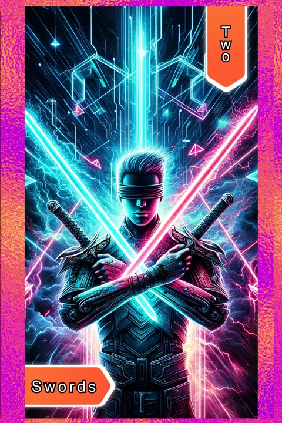
Two
Two of Swords
stalemate, choice, listening
Read this card
Name the decision you are postponing and gather the missing information without waiting for perfect certainty.
Notice what indecision protected and what it cost you.
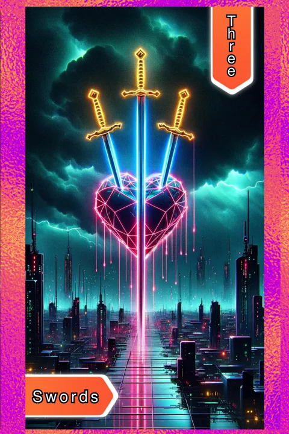
Three
Three of Swords
sorrow, truth, compassion
Read this card
Acknowledge disappointment without making it a verdict on your worth; ask for the company or space you need.
Reflect on what helped you face a painful truth gently.
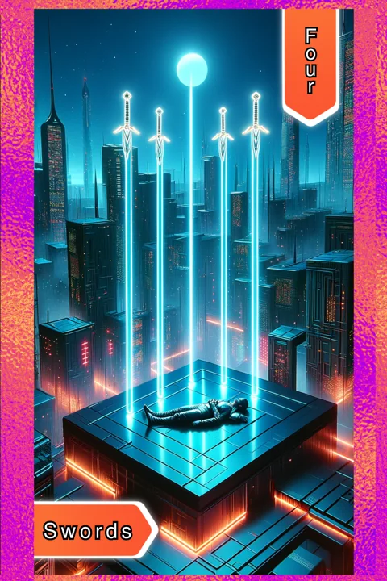
Four
Four of Swords
rest, recovery, perspective
Read this card
Create a pause before your next demanding task and let rest be part of the plan.
Ask what improved when you stopped treating recovery as something to earn.
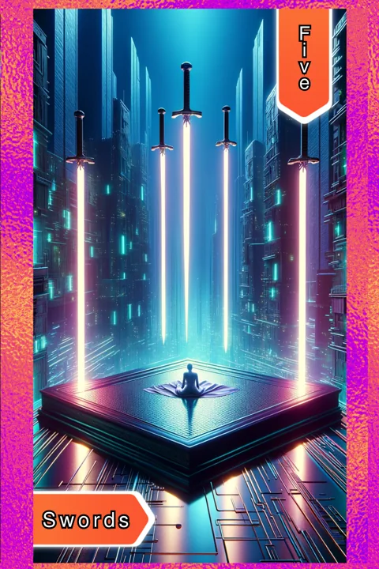
Five
Five of Swords
conflict, cost, repair
Read this card
Consider whether winning an argument would damage something more important than the point at issue.
Notice the difference between a useful boundary and an unnecessary last word.
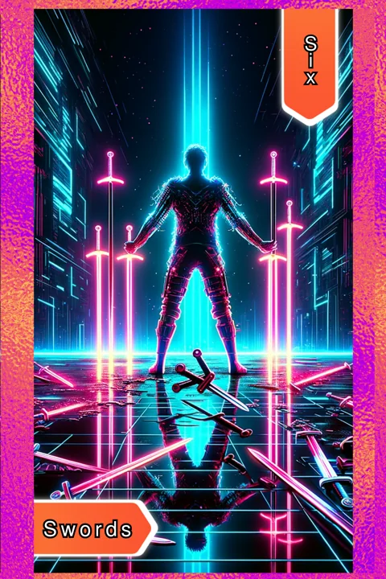
Six
Six of Swords
transition, support, distance
Read this card
Move toward a calmer arrangement one practical step at a time, allowing yourself to accept help.
Reflect on what became easier when you created distance from a recurring strain.
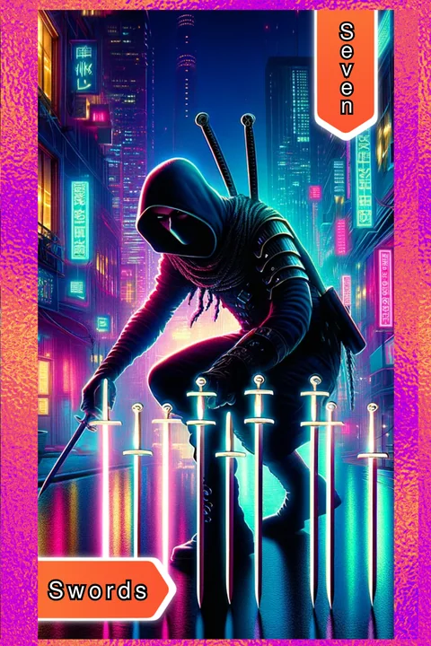
Seven
Seven of Swords
strategy, discretion, integrity
Read this card
Choose a thoughtful approach while making sure privacy does not become avoidance of an honest agreement.
Ask whether your strategy served a clear value or merely delayed an uncomfortable conversation.
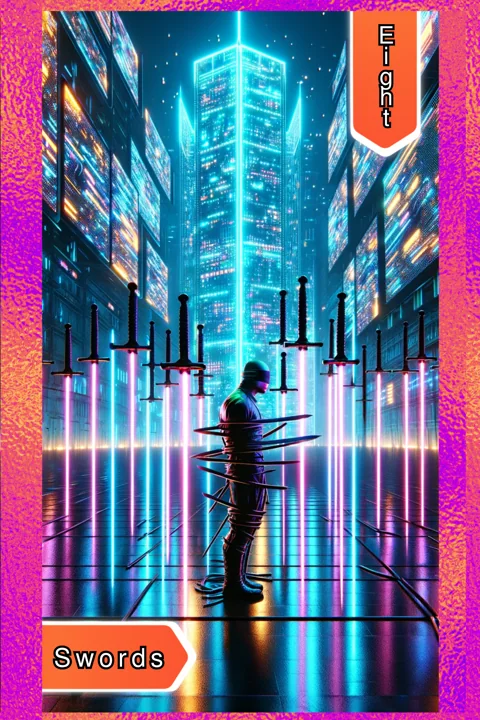
Eight
Eight of Swords
restriction, perception, agency
Read this card
Write down what is genuinely constrained and one small action still available to you.
Notice which assumption made the situation feel narrower than the evidence required.
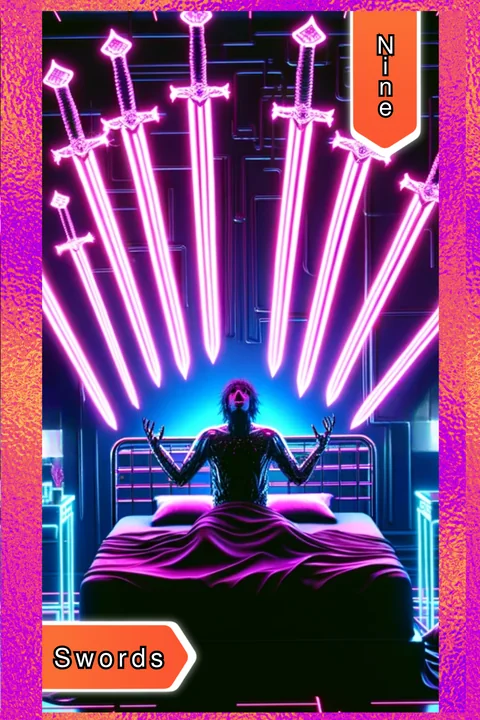
Nine
Nine of Swords
worry, rumination, support
Read this card
Put a recurring worry into words and check it with someone trustworthy instead of debating it alone all day.
Reflect on the difference between a feared outcome and something that actually happened.
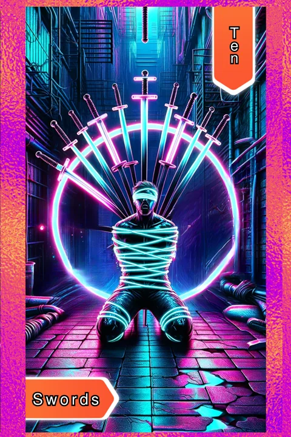
Ten
Ten of Swords
ending, exhaustion, release
Read this card
Recognize a stopping point and take care of the immediate basics instead of forcing another push.
Ask what an exhausted effort taught you about limits and the need to stop.
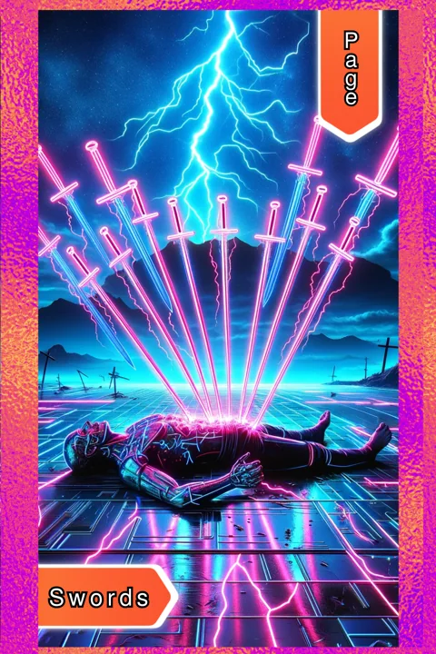
Page
Page of Swords
curiosity, observation, learning
Read this card
Ask a precise question and verify what you hear before sharing it as fact.
Notice where curiosity helped and where quick conclusions interrupted learning.
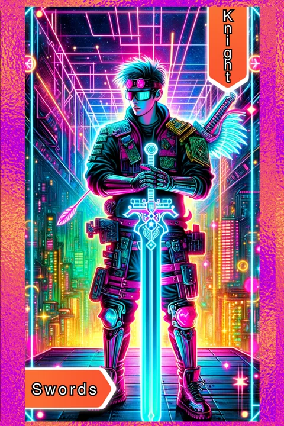
Knight
Knight of Swords
urgency, conviction, pace
Read this card
Give your argument a clear purpose and slow down enough to hear an important qualification.
Ask where speed helped you act and where it outran your understanding.
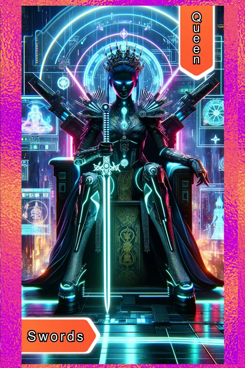
Queen
Queen of Swords
discernment, boundaries, candor
Read this card
Be clear about a limit while leaving room for another person’s dignity.
Reflect on a moment when directness was kinder than a vague promise.
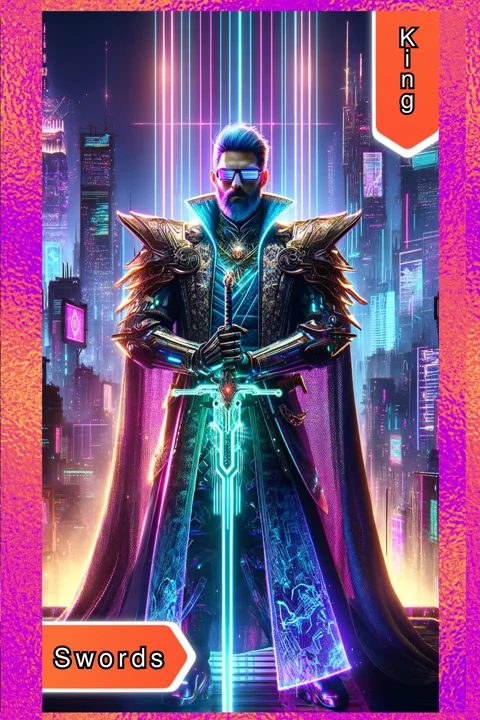
King
King of Swords
judgment, reason, responsibility
Read this card
Use evidence to make a considered decision, then explain the reasoning to people affected by it.
Ask whether your authority served fairness rather than the need to be right.